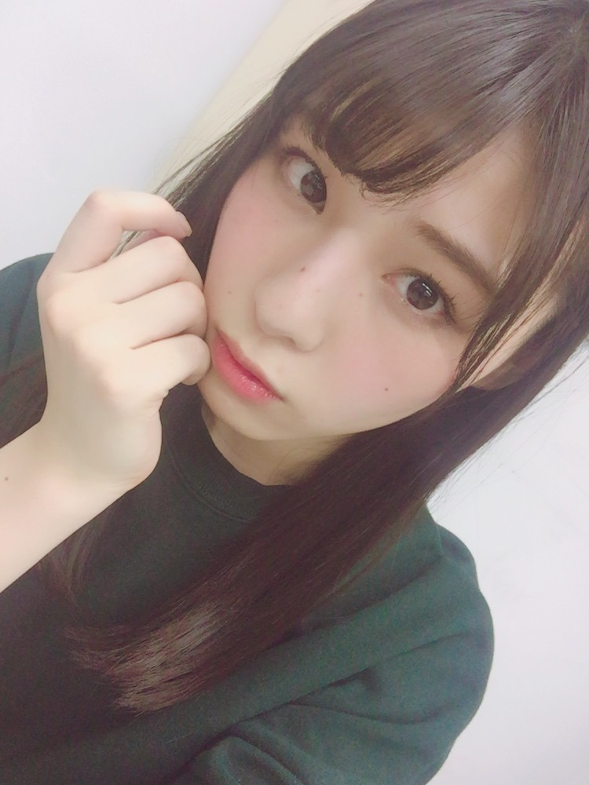
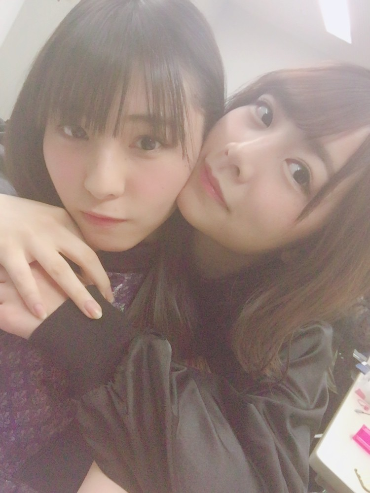
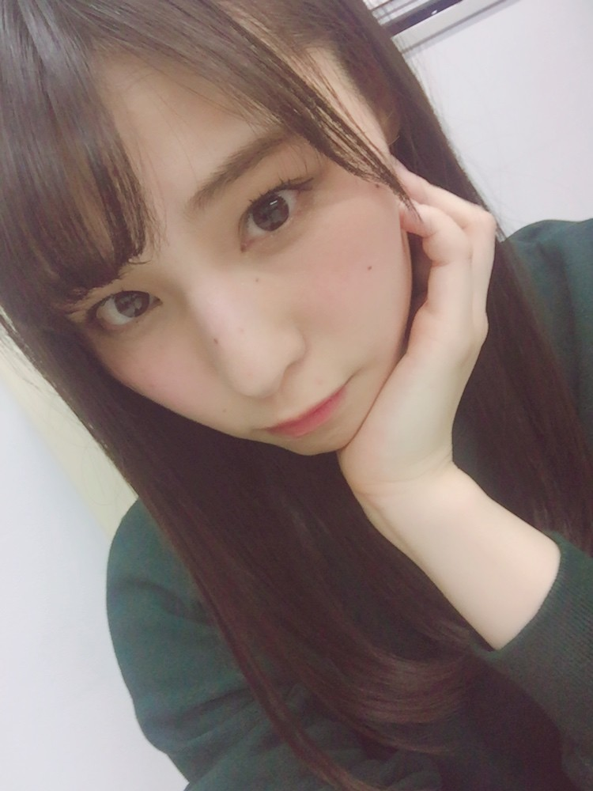
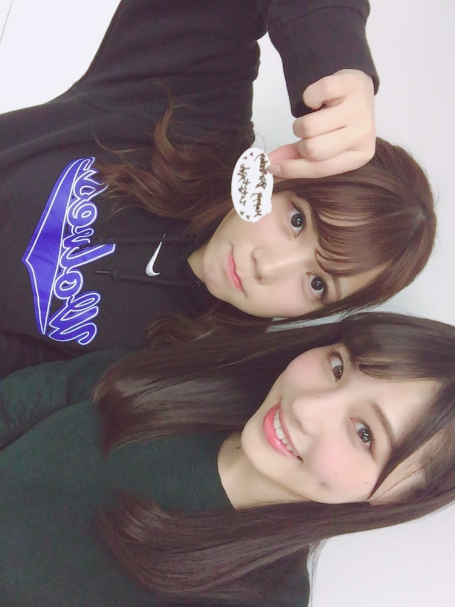

| 2017/03 23 Thu | ジャンジャカ_(．．*)vol.171 |
みなさんこんばんはー！
19歳 相楽伊織です！

17thシングル
｢インフルエンサー｣が発売されましたー！
沢山の方に手に取って頂けて
とても嬉しいです(｡> <｡)
個人PVの感想も聞かせてください。
今回は今泉監督に撮っていただいて
前に他のメンバーの個人PVも撮っていたのを観て
素敵な作品だなと思っていたので
今回はとても嬉しかったです(^^)

もやがかかってる
それと昨日発表になりましたが
今シングルのアンダーメンバーで
アンダーライブをやることが決まりました！
今日からモバイル先行販売が始まりました(^-^)/
東京体育館で
4/20,21,22の3日間です。
皆さん是非見に来てください！！
人数は今までで一番少ないけど、
みなさんの記憶に残るライブにしてみせます！

それからそれから
17枚目の個別握手会もまだ
会いに来られます(´▽｀)(´▽｀)
待ってます♪♪
それと、私が大好きな
ひなぴょんが19歳を迎えましたー♪

ぱちぱち
 のぎ天2
のぎ天2
みり愛、まあやと横浜中華街の
ロケに行ってきました！
沢山食べたんですけど
どれも美味しかったー♪
食レポがびっくりですよ(。-∀-)
 月刊エンタメ 3/30 発売
月刊エンタメ 3/30 発売
よろしくお願いしますm(_ _)m
i o r i .

コメント(309)
2017/03/23 23:59